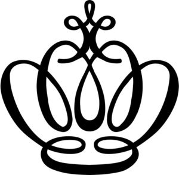

Trade Mark Journal No.2025/016 18 April 2025
WO0000001833746 (9,18,21,25)
Office of origin: Germany
Date of International Registration:18 April 2024
Date of designation in the UK:
18 April 2024

International priority date claimed: 31 January 2024
(Germany)
- Class 9
- Safety, security, protection and signalling devices; protective clothing [body armour]; head protection; safety caps; riding helmets; horse riding helmets; protective helmets for sports; safety jackets; reflective safety vests; mouth, elbow, chest and abdomen protectors for protection against injury [other than parts of sports suits or adapted for use in specific sporting activities]; protective visors; spectacles; goggles; goggles for sports; sports whistles; whistles [warning apparatus]; mouth guards for sports; sport bags adapted [shaped] to contain protective helmets; radar guns for sporting events; sports training simulators; electronic animal identification apparatus; electronic collars to train animals; decorative magnets in the shape of animals; reflecting strips for wear; reflective clothing for the prevention of accidents; clothing for protection against accidents; footwear for protection against accidents; clothes for protection against injury; boots [protective footwear]; protective visors; chest protectors for the prevention of accident or injury [other than specifically adapted for sport]; abdomen protectors for protection against injury [other than parts of sports suits or adapted for use in specific sporting activities]; safety gloves for protection against accident or injury; parts and accessories for all the aforesaid goods, included in this class.
- Class 18
- Gaiters for animal legs; equine leg wraps; equine boots; spats and knee bandages for horses and pads for riding saddles; leather and imitations of leather; furs; animal skins; goods of leather, imitations of leather, furs and animal skins, namely fur saddles, lambskin pads, lambskin saddle seats, lambskin saddle pads, pads of woven fur for riding saddles, leather straps for whips, casual bags, travel bags, shopping bags, shoulder bags, handbags, briefcases, sports bags, beach bags, school bags, shoulder straps, cosmetic bags, hip sacks, garment bags for travel, rucksacks, pouches, chest pouches, toiletry bags, travelling sets, shoe bags, gym bags; small leather goods, namely card cases, identification card cases, purses, key cases; hoof bells/jumping bells, being hoof guards; rubber parts for stirrups; hoof rings made of rubber; bits for animals [harness]; bits [bridles]; rubber spur protectors; saddle pads of synthetic rubber; whips; harnesses; saddlery, in particular straps for harnesses, stirrups or for saddles, lunging girths and leads, vaulting surcingles, snaffles, bridles; spur straps; collars for animals; leads for animals; covers for animals; horse blankets; shabracks; saddlecloths for horses; fly masks for animals; horse fly sheets; fly ears / hoods for horses; horse collars; horse tail wraps; training leads for horses; horse saddles; covers for horse saddles; harness fittings of iron; cribbing straps for horses; articles of clothing for horses; face masks for equines; harness for animals; halters for horses; lead ropes for horses; luggage, bags, wallets and carrying bags; travel luggage; tote bags; umbrellas; bags for umbrellas; parasols; walking sticks; horseshoes; stud hole plugs for horseshoes; hoof guards; clothing for pets; clothing for dogs; dog leashes; dog collars; rawhide chews for dogs; rings of rubber for blanket fastenings [parts of saddlery]; parts and accessories for all the aforesaid goods, included in this class.
- Class 21
- Household or kitchen utensils; containers for household or kitchen use; cookware and tableware, except forks, knives and spoons; articles for the care of clothing and footwear, namely clothing stretchers, brushes for footwear, boot trees, buttonhooks, boot jacks, clothes-pegs, clothes drying hangers, glove stretchers, lint removers, electric or non-electric, ironing boards, flat-iron stands, shoe horns, tie presses, trouser presses, shoe shine cloths and wax-polishing appliances, non-electric, for shoes; combs; sponges; brushes; cleaning instruments and cleaning articles, in particular for animal care; combs, brushes and cleaning items for animal care, in particular mane and tail combs, fur, mane and tail brushes, horse brushes, curry combs, washing brushes, hoof brushes, washing sponges, cleaning gloves; animal grooming gloves; scoops for the disposal of animals excrement; dog food scoops; animal activated animal feeders; non-mechanized animal feeders; drinking troughs; toothbrushes for animals; mangers for horses; glassware; porcelain; earthenware; devices for pest and vermin control, in particular traps for insects and vermin; articles for animal husbandry, namely feeding troughs, animal feeders, animal feeding and drinking bowls, grooming articles, waste disposal articles; plastic containers for dispensing food to pets; scoops for the disposal of pet waste; parts and accessories for all the aforesaid goods, included in this class.
- Class 25
- Clothing; footwear; headgear for sports and leisure purposes; leisure and sports shoes; leisurewear and sportswear; parts of clothing, footwear and headwear, namely detachable collars, heel protectors for shoes, underarm gussets [parts of clothing], straps for bras, inner soles, heels and heelpieces, heel inserts, embossed soles of rubber or of plastic materials, non-slipping devices for footwear, shirt yokes, collars for dresses, cuffs, cap peaks, footwear uppers, welts for footwear, shoe straps, pullstraps for shoes and boots, protective members for footwear, shoe soles, heelpieces for stockings, tongues for shoes and boots, pockets, gussets [parts of clothing], stiffeners for boots, boot uppers, anti-slip pads for thong sandals, ready-made linings and hat frames (skeletons).
Equestrian GmbH
Representative: Eversheds Sutherland (Germany) Rechtsanwälte Steuerberater Solicitors Partnerschaft mbB, Briennerstr. 12, 80333 München, GERMANY